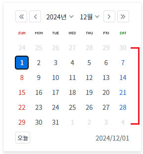
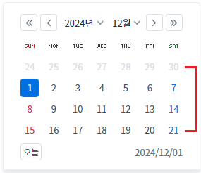
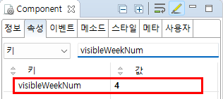

Calendar의 'visibleWeekNum' 속성을 사용하여 화면에 보여지는 주(Week)의 개수를 지정하는 예제입니다.
(기본 설정) 보여지는 주(Week)의 개수를 6으로 설정
보여지는 주(Week)의 개수를 4로 설정
화면 로딩 시 Calendar에 2024년 12월 1일이 선택되도록 설정되었습니다.
1
실행된 결과를 확인합니다.
Calendar에 6개의 주(Week)가 표시됩니다.
Image 1.브라우저(Chrome) 실행 예시 - 기본 설정

1
실행된 결과를 확인합니다.
Calendar에 4개의 주(Week)가 표시됩니다.
Image 2.브라우저(Chrome) 실행 예시 - 월에 보여지는 주의 수를 4로 설정

1
속성 정의하기
컴포넌트의 'visibleWeekNum' 속성을 '4'로 정의합니다. 이 속성을 적용하지 않은 경우 기본 값은 '6'입니다.
Image 3.웹스퀘어 스튜디오의 Component View 예시

Example 1.Source
<!-- calendar의 소스 본문 예시 --> <w2:calendar visibleWeekNum="4"> </w2:calendar>
visibleWeekNum